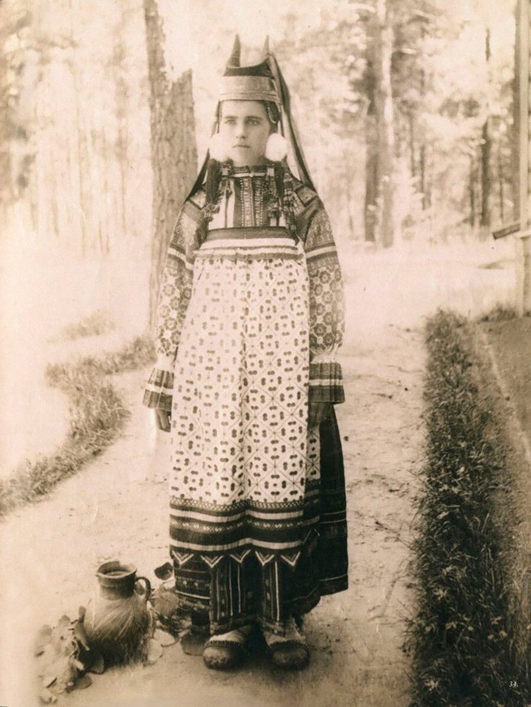

Fig.2 - Kika (or Kichka): An everyday or festive structured cap covering married woman's hair.

Fig.3 - Traditional kika often featured distinct horns. This heavy headdress was first mentioned in a 14th century document and dates back to paganism. Horns symbolized fertility.